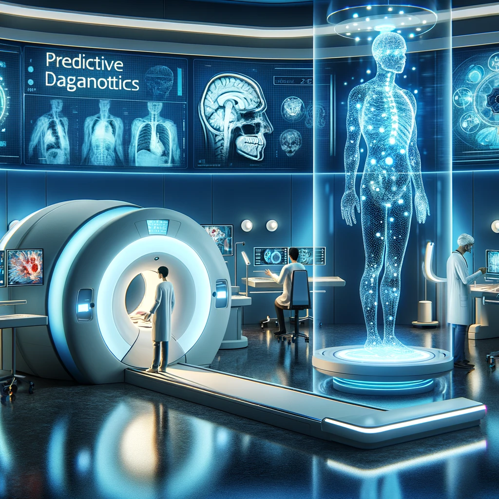

Welcome to the First Exploration on Machine Learning (ML) and Artificial Intelligence (AI)
Today, we'll cover the foundational concepts of ML and AI, explore their development, and examine key applications. We'll clarify the differences and connections between AI and ML, dispel myths, and establish a solid foundation for future explorations.
Prerequisites for Learning About Large Language Models
To effectively study large language models, you should have knowledge in:
- Python Programming: Proficiency in Python, including libraries like NumPy and pandas.
- Mathematical Foundations: Understanding of linear algebra, probability, statistics, and basic calculus for model optimization.
- Neural Networks and Deep Learning: Knowledge of neural networks, training methods, and architectures like RNNs, LSTMs, and Transformers.
These prerequisites will enable you to follow discussions and engage in practical implementations, starting with simple examples.
Machine Learning and Large Language Models
Machine Learning (ML) is the foundation for Large Language Models (LLMs). ML involves training algorithms to recognize patterns and make decisions based on data.
Machine Learning: The Foundation
ML trains algorithms to learn from data rather than being explicitly programmed.
Large Language Models: A Specialization within ML
LLMs like GPT and BERT specialize in processing and understanding natural language through deep learning on vast text datasets. Key ML concepts in LLMs include:
- Supervised Learning: Training on labeled datasets.
- Unsupervised Learning: Making sense of data without explicit labels.
- Neural Networks and Deep Learning: Using large neural networks, particularly transformer architectures.
Key Relationships and Applications
LLMs are central to modern NLP, enabling applications like translation, summarization, and sentiment analysis. They use transfer learning for fine-tuning and demonstrate improved performance with larger datasets and models.
Differences Between AI and ML
AI involves creating intelligent machines, while ML is a subset of AI focused on training machines to learn from data. ML is one approach to achieving AI.
Everyday Life Encounters with Embedded Machine Learning and Deep Learning Technologies
In today's digital age, machine learning, deep learning, and large language models are integral to a vast array of technologies that people encounter every day. These technologies have been seamlessly integrated into products and services across various industries, enhancing user experiences and providing personalized content. Here are some common examples that many people interact with on a daily basis:
Recommendation Systems
Examples: Netflix, Spotify, Amazon.

Technology: These platforms use collaborative filtering, content-based filtering, and increasingly deep learning techniques to recommend products or media. They analyze past user behavior alongside large datasets of similar decisions made by other users to predict what the user might like next. Collaborative filtering leverages the preferences of similar users, while content-based filtering focuses on the attributes of items the user has interacted with.
Deep learning enhances these traditional methods by capturing complex patterns in user behavior and item attributes. For instance, Netflix may suggest movies based on genres you've watched before, leveraging a mix of collaborative and content-based filtering. Additionally, deep learning models analyze viewing habits, user interactions, and even textual descriptions to provide more accurate recommendations. Similarly, Spotify recommends songs by analyzing listening habits, user-created playlists, and audio features such as tempo and rhythm.
For more detail see How Recommender Systems Work (Netflix/Amazon)Social Media Feeds
Examples: Facebook, Instagram, Twitter.

Technology: Social media platforms use machine learning algorithms to personalize user feeds and moderate content effectively. This involves natural language processing to understand the context of posts and collaborative filtering to deliver content that aligns with user preferences, maximizing engagement and user interaction. Advanced algorithms analyze user behavior, interactions, and preferences to continuously improve the relevance of the content displayed in the feed.
Email Spam and Phishing Detection
Examples: Gmail, Outlook.

Technology: Email services employ deep learning algorithms to detect spam and phishing attempts by analyzing patterns in the text that may signify malicious intent. Techniques such as text classification and anomaly detection help improve the accuracy of spam filters over time. These systems learn from vast amounts of email data, continuously adapting to new types of threats to protect users more effectively.
Smart Personal Assistants
Examples: Siri, Alexa, Google Assistant.

Technology: These devices use advanced NLP powered by large language models to understand and respond to spoken commands. Large language models like GPT (Generative Pre-trained Transformer) and BERT (Bidirectional Encoder Representations from Transformers) are trained on vast amounts of text data. This training enables them to grasp the nuances of language, context, and user intent. In recent years, companies have started incorporating these more advanced NLP techniques into their smart assistants, resulting in significant improvements.
Through a process known as 'transfer learning,' these models can be fine-tuned to perform specific tasks such as understanding inquiries about the weather, controlling home automation systems, or providing real-time translations. Transfer learning allows these pre-trained models to be adapted for specific tasks without starting from scratch, making them more efficient and effective at handling diverse queries. Smart assistants continuously learn from new interactions to improve their accuracy and user experience.
Implementation Details: These models are hosted on cloud servers, providing the computational power necessary for real-time processing and response. Hosting the models on cloud servers provides the necessary resources to handle complex NLP tasks and allows for continuous updates and improvements. This cloud architecture ensures that the personal assistants can be updated and improved without requiring changes to the hardware of the consumer devices.
Privacy and Data Handling: To address privacy concerns, leading technology companies implement stringent data protection protocols. Users' voice inputs are anonymized and encrypted before being processed by these models, ensuring that personal information remains confidential. Privacy and security are critical, and companies are making efforts to ensure user data is protected through anonymization and encryption.
Autonomous Vehicles
Examples: Tesla Autopilot, Google Waymo.

Technology: Autonomous vehicles use a combination of convolutional neural networks and reinforcement learning to process sensor data and make decisions in real-time. This data comes from cameras, LIDAR, and GPS systems to enable safe navigation and obstacle avoidance in diverse driving conditions. These models continuously learn from new driving scenarios, improving their ability to handle complex environments and unexpected events.
Facial Recognition Systems
Examples: iPhone Face ID, Surveillance Systems.
Technology: These systems leverage convolutional neural networks (CNNs) to analyze facial features and perform tasks such as identity verification. Advanced algorithms can adapt to variations in light, facial expressions, and angles, ensuring reliability and accuracy. Continuous improvements and training on diverse datasets help these systems maintain high performance in different conditions.
Voice-to-Text Services
Examples: Voice typing on Google Docs, Real-time captioning on YouTube.
Technology: These services use advanced speech recognition algorithms powered by deep learning to convert spoken language into written text accurately. Continuous learning from vast amounts of voice data helps improve the precision of speech-to-text engines. These models can handle diverse accents, dialects, and noisy environments, making them highly versatile for various applications.
Customer Service Chatbots
Examples: Chatbots on banking websites, customer support on e-commerce sites.
Technology: Powered by natural language processing, these chatbots are capable of understanding and responding to customer inquiries effectively. They are trained on specific data sets to handle a wide range of queries, from transaction support to troubleshooting, providing a 24/7 customer service solution. Continuous improvements in NLP enable chatbots to better understand context and provide more accurate and helpful responses.
Sentiment Analysis
Examples: Product reviews, market research.
Technology: Machine learning models, particularly those based on natural language processing, analyze textual data to determine the sentiment expressed in product reviews or social media posts, aiding companies in understanding consumer emotions and opinions. These models can detect subtle nuances in language, providing insights into customer satisfaction and market trends.
Healthcare Diagnostics
Examples: Radiology imaging, predictive diagnostics.
Technology: Deep learning models, such as CNNs, are used to analyze medical imaging data, helping to detect and diagnose diseases with a level of accuracy comparable to or sometimes surpassing human experts. These models can also predict patient outcomes based on historical data, improving over time as they process more cases. AI-powered diagnostics can assist doctors in making more informed decisions, ultimately enhancing patient care.